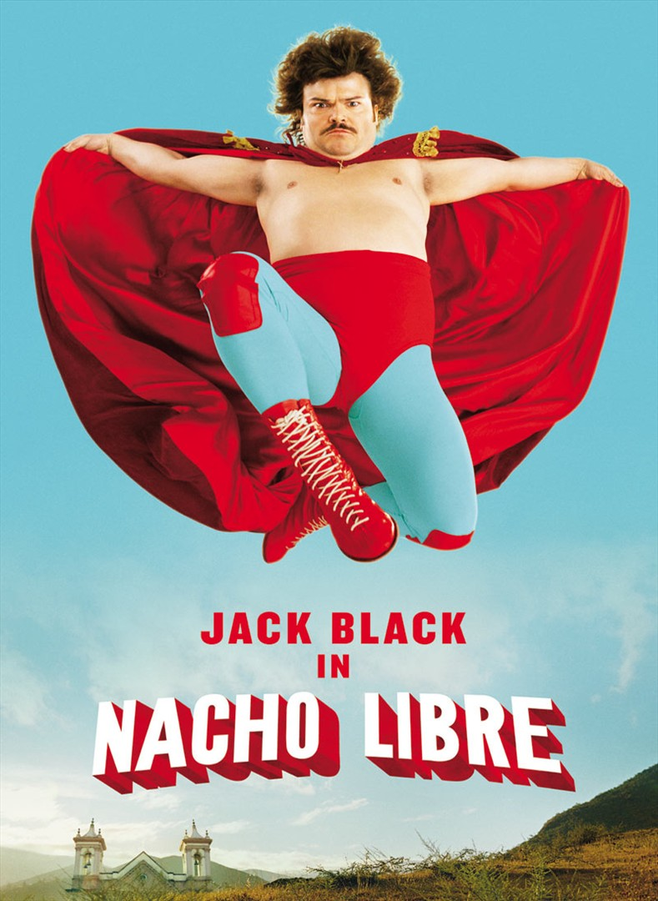
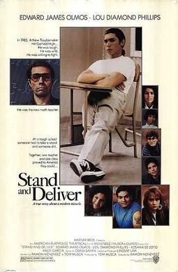
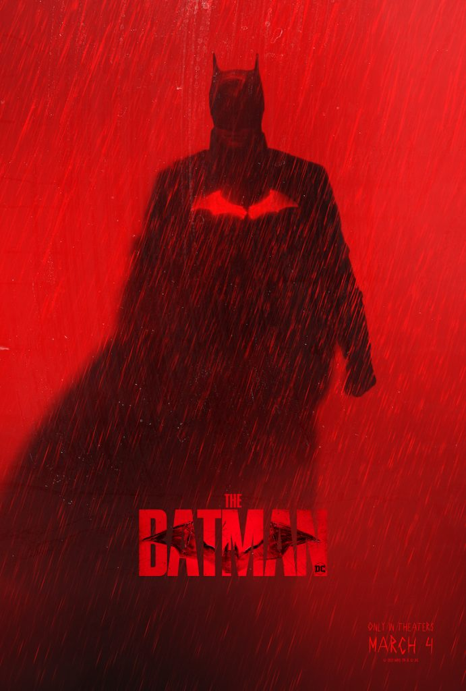
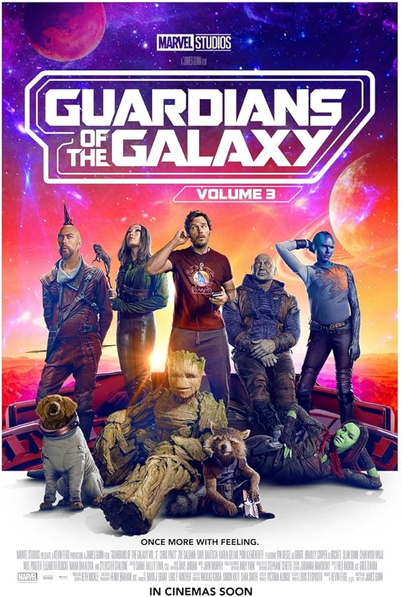

Wall-E

Walle-E is about a robot that craves companionship in the future. He falls in love with a robot named Eve and follows her to her homeship, where they run into humans and other robots.
Nacho Libre
Nacho Libre is a film where a church priest dreams about being a wrestler, but that directly conflicts with his life of holiness. He caves in and pursues wrestling in secret, but it is not long before he is found out.
Stand And Deliver
Stand And Deliver is about a teacher who goes out of his way to teach kids calculus in an impoverished neighborhood in East Los Angeles. He runs into many obstacles along the way, but remains determined to teach these kids so that they may improve their lives
The Batman
Batman is about Bruce Wayne. He has been a vigilante known as Batman for a little less than 3 years and has already made a name for himself. He constantly fights with the trauma of his parents' murder and a serial killer named Riddler.
Guardians Of The Galaxy Vol 3.
Guardians of The Galaxy Volumes 1 and 2 were already 2 strong movies. Debately some of the stronger movies in the Marvel Cinematic Universe, but volume 3 completely knocks it out the park. It touches upon the more sensitive side of Rocket and his backstory. In my eyes it is one of the best 3 movies in the MCU.
Star Wars: Episode V

Simply an iconic movie. The Star Wars franchise up to this point is some of the best story-telling in film history. But to dedicate an entire movie to the villains winning is an absolute baller move. Simply does not get much better than this.
Forrest Gump

Another iconic movie. Who would have guessed? I simply can never get tired of this movie. I always come back to this movie every once in a while. Somehow watching it again and again never makes it dull.
Simpsons Movie

Perhaps a rare choice, but this one holds sentimental value. Growing up in California, my parents constantly put on The Simpsons, and the Simpsons Movie was the funniest thing I had ever watched. (Before I had eventually watched Scary Movie 2)
The Lost World

I love the original Jurassic Park trilogy, but the second addition to the franchise always takes my breath. The scoring and plot is some of my favorite in film. All of the characters are also just insanely likeable.